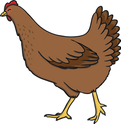
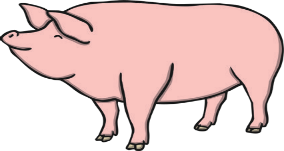
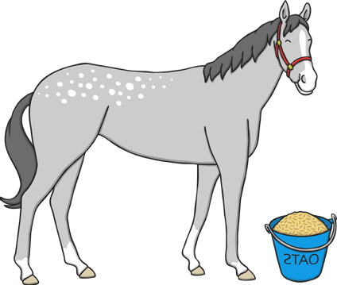
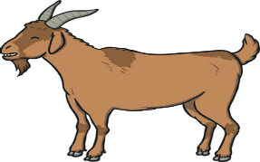
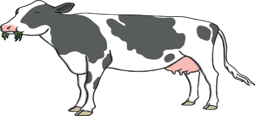
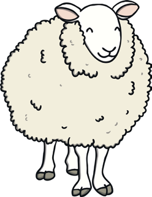
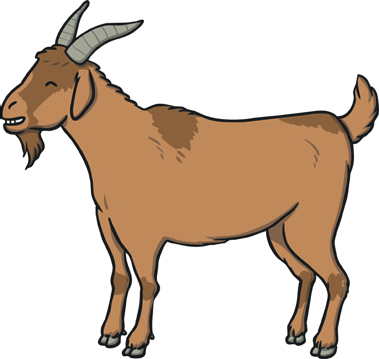
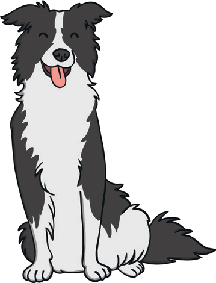
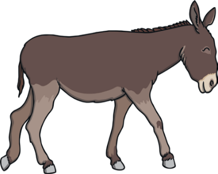
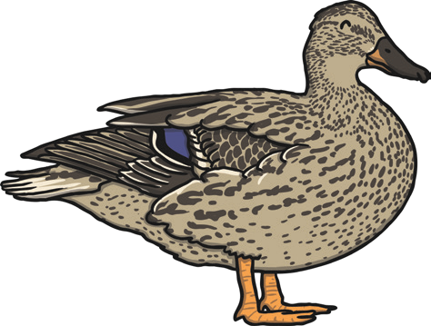

Farm animals (group 1)
1. Look at the picture and talk about the different farm animals you see.


Farm animals (group 2)
1. Match the pictures to the word.
dog | ||
| horse | |
 | pig | |
 | chicken | |
 | duck | |
 | cow | |
| donkey | |
 | sheep | |
 | goat |


Farm animals (group 3)
 1. Label the pictures with the right farm animal.
1. Label the pictures with the right farm animal.






dog |
horse |
pig |
chicken |
duck |
cow |
donkey |
sheep |
goat |